Aplicación web para resolver, simular y aprender MRU, MRUA y tiro parabólico: paso a paso como en el cuaderno, con animaciones y un juego de hondilla.
Dennis Avila · AF23013
Juan Fernando Morales Fuentes · MF25036
Docente: Ing. Gerson Menjívar · Noviembre 2026
01 · Propósito
¿Qué busca resolver la aplicación?
Convertir los ejercicios de cinemática en una experiencia visual e interactiva.
Necesidad
En clase vemos fórmulas y números, pero cuesta imaginar cómo se mueve el objeto y por qué se usa cada ecuación.
Propuesta
Una aplicación web que recibe los datos del problema, lo resuelve paso a paso y lo simula con gráficas y animación.
Valor educativo
Relacionar datos, fórmulas, gráficas y trayectoria; practicar y revisar tareas con el método de clase.
Objetivo general:
Desarrollar una aplicación web que permita resolver, simular y explicar problemas de MRU, MRUA y tiro parabólico, mostrando el procedimiento como se hace en clase.
02 · Alcance
Movimientos que contempla la aplicación
Movimiento unidimensional
MRU
Velocidad constante, aceleración cero.
Un microbús a 15 m/s por la carretera.
MRUA
Aceleración constante: la velocidad cambia parejo.
Un pick-up que frena hasta detenerse.
Movimiento bidimensional
Tiro parabólico
MRU en x y MRUA en y al mismo tiempo.
Una piedra desde el mirador del Cerro Verde.
Para cada movimiento, la aplicación tiene:
① Resolver ejercicio paso a paso
② Simulación con gráficas
③ Modo clase que explica el tema
④ Juego «La hondilla» (parabólico)
03 · Funcionamiento
Del dato inicial a la solución
El usuario escribe lo que dice el problema y la aplicación hace el resto.
1
Seleccionar
Elegir el movimiento y la herramienta: resolver, clase o juego.
2
Ingresar
Escribir los datos y marcar con ? lo que piden.
3
Validar
Se revisa que los valores sean válidos y que alcancen.
4
Resolver
El motor busca la ecuación con una sola incógnita, despeja y repite.
5
Mostrar
Solución en hoja de cuaderno, animación y gráficas.
💡
Cada respuesta sigue el orden de clase: Datos · Incógnita · Fórmula · Despeje · Sustitución · R/. Si falta un dato o sobra uno que no cuadra, la aplicación lo avisa.
04 · Arquitectura
Arquitectura en tres capas
La física vive en un solo lugar: el motor en Rust. La interfaz nunca calcula, solo muestra.
Lo que se ve
Interfaz web
React + TypeScript. Formularios, animación en Canvas, gráficas, fórmulas con KaTeX, modo clase y juego.
El puente
Servidor Node.js
Fastify + zod. Recibe el ejercicio en JSON, revisa que los datos sean válidos y llama al motor.
El cerebro
Motor en Rust
Ecuaciones, despejes, simulación paso a paso y la física del juego. Se conecta a Node con napi-rs.
En la web publicada, el mismo motor en Rust corre dentro del navegador, compilado a WebAssembly.
En línea recta y con aceleración constante: si a va en contra de v, frena.
Truco: usá la fórmula sin la letra que ni te dan ni te piden
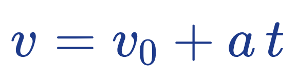
no tiene d
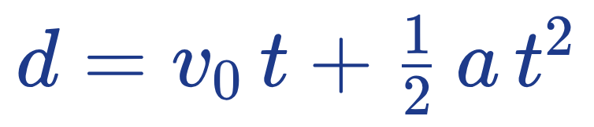
no tiene v
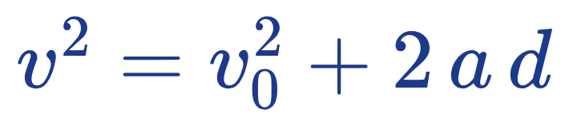
no tiene t
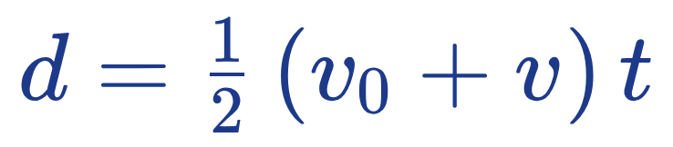
no tiene a
dondev = velocidad final · v₀ = velocidad inicial (m/s) · a = aceleración (m/s²) · t = tiempo (s) · d = distancia (m)
Ej.: un carro a 25 m/s frena y se detiene en 50 m.
0² = 25² + 2·a·50 → a = −6.25 m/s²
0 = 25 − 6.25·t → t = 4 s
12 · Tiro parabólico
Dos movimientos al mismo tiempo
Lo que pasa en horizontal no afecta lo que pasa en vertical (principio de independencia).
En x → MRU
vₓ = v₀ cos θ
No hay aceleración: no cambia en todo el vuelo.
En y → MRUA
vᵧ = v₀ sen θ − g t
a = −g: sube frenando, se detiene arriba y baja acelerando.
Modelo ideal: sin resistencia del aire.
13 · Tiro parabólico
Tiro parabólico: las ecuaciones
g = 9.81 m/s² · sin resistencia del aire
Descomponer
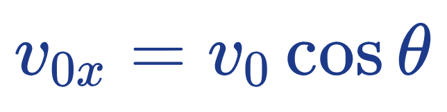
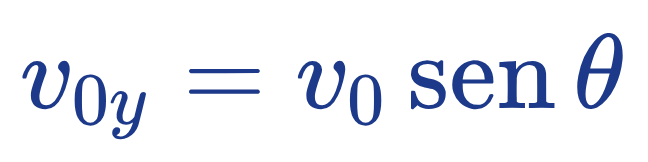
dondev₀ = velocidad inicial (m/s) · θ = ángulo de lanzamiento · v₀ₓ, v₀ᵧ = componentes horizontal y vertical
Subida
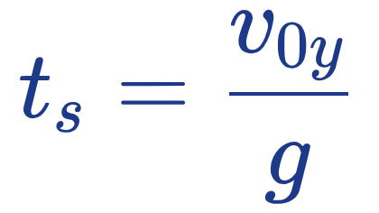
dondetₛ = tiempo de subida (s) · hₘₐₓ = altura máxima (m) · h₀ = altura inicial (m) · g = gravedad
Vuelo
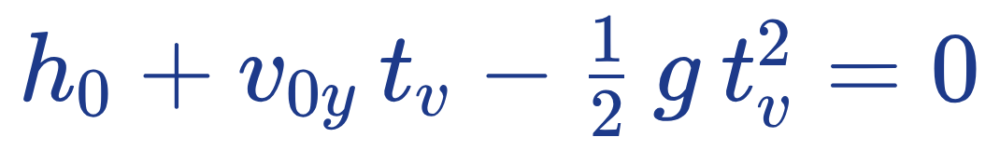
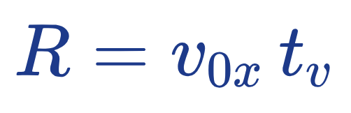
dondetᵥ = tiempo de vuelo (s) · R = alcance horizontal (m)
Ejemplo
v₀ = 20 m/s, θ = 45°, desde el suelo
v₀ₓ = v₀ᵧ = 20 · 0.707 = 14.14 m/s tₛ = 14.14 ÷ 9.81 = 1.44 s hₘₐₓ = 14.14² ÷ (2 · 9.81) = 10.19 m tᵥ = 2 · tₛ = 2.88 s R = v₀ₓ · tᵥ ≈ 40.77 m
14 · Verificación
Pruebas realizadas
55
pruebas automáticas, todas pasan: 16 del motor, 10 del servidor y 29 de la interfaz.
23
pruebas de paridad: la copia sin internet (un solo HTML) da los mismos resultados que el motor en Rust.
10/10
niveles del juego comprobados: cada uno se puede ganar con algún tiro.
Además comparé los ejemplos con ejercicios resueltos a mano. Las pruebas dan confianza en los casos probados, pero no garantizan que no haya errores en todos los casos posibles.
15 · Publicación
Acceso a la aplicación
Sitio web · Vercel
cinemalab-mec115.vercel.app
Se abre desde cualquier navegador o celular, sin instalar nada.
Código · GitHub
github.com/dennisavila12/cinemalab
Cada cambio que se sube a GitHub se publica solo en Vercel.
¡Escanéenlo y pruébenla!
16 · Módulo Resolver
La solución, como en el cuaderno
A la izquierda, los datos
Con ? se marcan las incógnitas. Trae ejercicios de ejemplo de aquí.
A la derecha, la hoja
Fórmula, despeje y sustitución; resultado en recuadro y R/.
Probalo aquí mismo: elegí «Frenado en la carretera».
EN VIVO
17 · Experiencia visual
¿Qué puede observar el usuario?
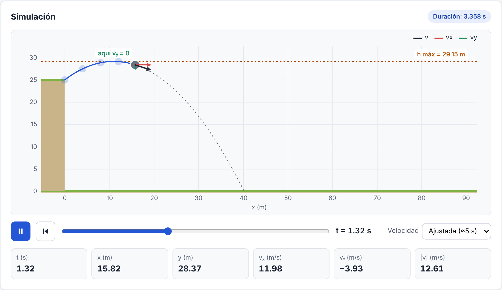
Animación
El objeto se mueve con sus vectores de velocidad.
Panel de valores
t, x, y, vx y vy en cada instante.
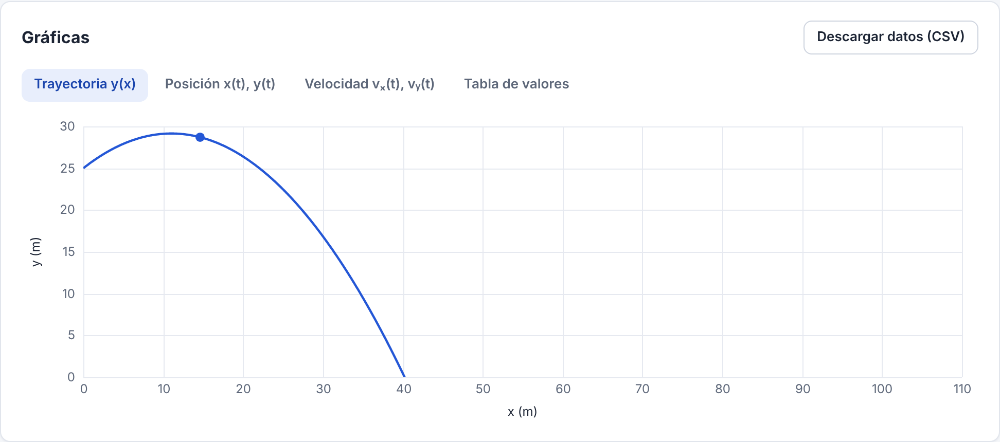
Gráficas y tabla
Trayectoria, posición y velocidad contra el tiempo; la tabla se descarga en CSV.
18 · Modo clase
La aplicación explica el tema
EN VIVO
Por escenas
Como diapositivas: la animación muestra lo que dice el texto.
En voz alta
Puede narrar cada escena.
Con tus datos
Explica tu ejercicio, no solo el ejemplo.
18 · Modo clase por dentro
¿Cómo habla el modo clase?
Sin audios grabados ni servicios externos: usa la voz que ya trae el navegador.
voz.ts (simplificado)
functionnarrar(texto) {
const voz = newSpeechSynthesisUtterance(texto);
voz.voice = elegirVoz(); // es-SV, es-MX… o español
voz.onend = () => avanzar(); // al terminar, sigue
speechSynthesis.speak(voz); // ¡que hable!
}
// cada escena trae su texto desde el motor en Rustnarrar(escena.titulo + '. ' + escena.narracion);
1
El texto
El motor arma cada escena con su título y su explicación.
2
La voz
Busca una voz en español: El Salvador, México o Latinoamérica.
3
Habla
El navegador lee el texto en voz alta.
4
Espera
La clase no avanza hasta que la voz termina.
Ojo: la voz depende del aparato; puede sonar distinta en cada computadora o celular.
19 · Juego
La hondilla: el parabólico jugando
EN VIVO · ¡A jugar!
Botá las latas · 5 niveles
Bajá mangos · 3 palos
Hondillazos entre amigos · 2 jugadores
20 · Juego por dentro
¿Cómo sugiere el tiro perfecto?
1
En x es un MRU: despejamos el tiempo que tarda en llegar a la distancia d.
2
Lo sustituimos en la altura del MRUA y queda la ecuación de la trayectoria.
3
Ponemos la posición del mango (d, y) y despejamos la rapidez que hace falta.
Palo de la abuela con θ = 45°: la aplicación sugiere v₀ ≈ 14.6 m/s.
21 · Código clave: el juego
El juego mueve la piedra 240 veces por segundo
const DT: f64 = 1.0 / 240.0; // paso de tiempoloop {
let t = i as f64 * DT;
// x = x0 + v0x·t y = y0 + v0y·t − ½·g·t²let (x, y) = posicion(lanzador, angulo, rapidez, t);
iftoca(lata, x, y) { golpes.push(lata) }
ifchoca(obstaculo, x, y) { break } // palo, muro…if y <= 0.0 && bajando { break } // llegó al suelo
i += 1;
}
1
Las fórmulas de clase
La posición sale de las ecuaciones del tiro parabólico.
2
Choques
En cada paso revisa si la piedra tocó una lata, un mango o un obstáculo.
3
Explicación
Con el resultado, otra parte del motor escribe por qué se pasó o se quedó corto.
Cierre
De la fórmula al hondillazo
CinemaLab integra física, programación y visualización: el procedimiento del cuaderno, animado y jugable.
Pruébenla: cinemalab-mec115.vercel.app
Control conectado
Controlá la presentación con tu teléfono
Escaneá el código con la cámara del teléfono. Ahí vas a ver tus notas, el tiempo de cada lámina y los botones para avanzar.
O abrí … y escribí el código:
······
Preparando conexión…
Teclas: ← → espacio para avanzar · F pantalla completa · C este cuadro.